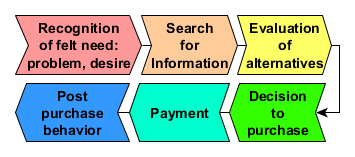
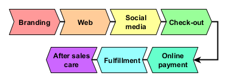

3.1 Online Store
3.1.1 Stages in Customer Purchasing Decisions

Stages in customer purchase decision making
3.1.2 Business Processes to Support Shoppers

Business support of shoppers
3.1.3 Steps of check out and order fulfillment
- Login: links to shopping cart and history
- Establish an account with the vendor
- Add items to the shopping cart
- Shopping cart check out
- Conducts an inventory check of items in shopping cart
- Determines the mode of shipping
- Calculates bill
- Renumeration via bank transfer
- Determines the method of payment
- Login onto financial service
- Confirms the transaction
- SMS validation code to telephone
- Conducts and records the transaction
- Send payment confirmation to the vendor
Online Payment Methods Used in Thailand
Credit card and bank fraud is very common in Thailand to the level that most banks and credit card companies do not provide the quarantees for purchases and other consumer protection that conhsumers in other countries enjoy. In essence Thailand financial firms assume no risk and carry no insuraNCE AGAINST BANK AND CREDIT CARD FRAUD. Nonetheless, the following payment methods are used in Thailand.
| Type and example | Benefits | Risk |
|---|---|---|
| Credit card | Convenient, international standard | |
| Bank transfer | ||
| ATM | ||
| Online payment company: Payypal, Alipay | ||
| Payment service 7-Eleven, TOT | ||
| Mobile phone credits | ||
| Cash on delivery |
- Send a shipping request to the Fulfillment Center
- Pick list and shipping manifest
- Print shipping label
- Send pick up order to delivery service
- Shipping
- Record shipment pickup
- Register the shipment
- Track the shipment
- Record the delivery